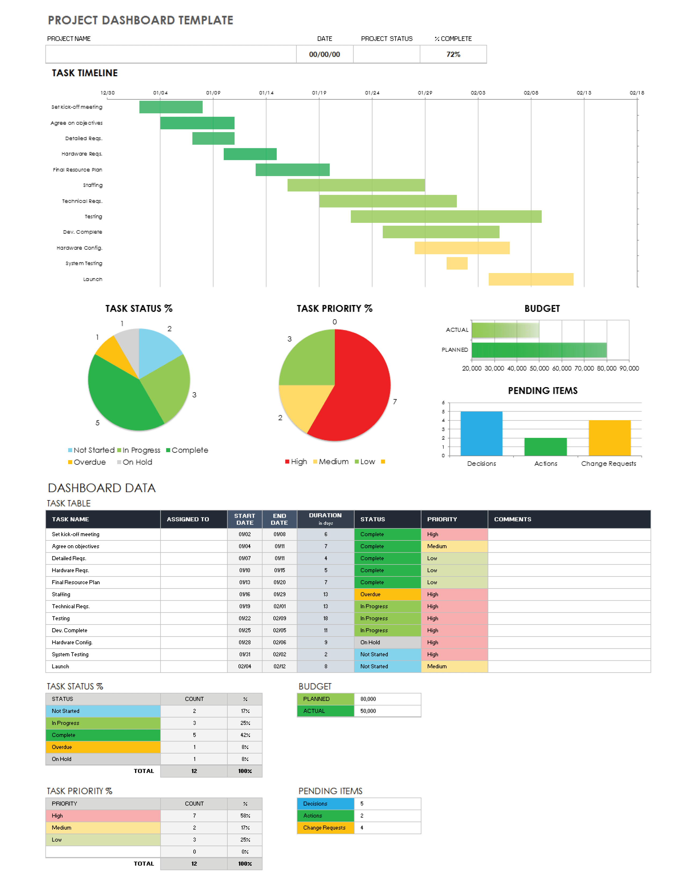

PROJECT TRACKING
Project Dashboard Template
Brings timelines, task status, budget, and pending work together in one view.
DATA ANALYST · MYANMAR
Hello, I’m Thazin. I explore data, build thoughtful dashboards, and make insights easier to understand and act on.
SELECTED WORK
A few visual explorations focused on making project data easier to scan, understand, and use.

PROJECT TRACKING
Brings timelines, task status, budget, and pending work together in one view.

PERFORMANCE OVERVIEW
Highlights project cost, schedule performance, and progress across project phases.

DELIVERY TRACKING
Presents project tasks and progress across a clear schedule view.
HOW I WORK
Good analysis is more than a chart. It’s a practical path from a question to a confident next step.
Organize and check data so it is ready to explore.
Look for patterns, changes, and useful answers.
Present the important information clearly and simply.
Turn findings into a story people can act on.
A LITTLE ABOUT ME
I’m Thazin Moe, a data analyst who enjoys finding the signal in complex information. My focus is on clear analysis and approachable visualizations that help people see what matters.
I value curiosity, careful work, and communication that makes insights useful—not just interesting.
HAVE A QUESTION OR IDEA?